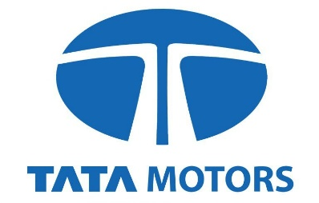
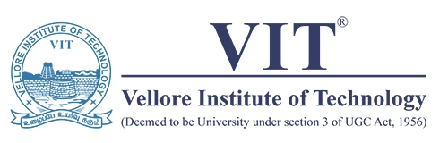
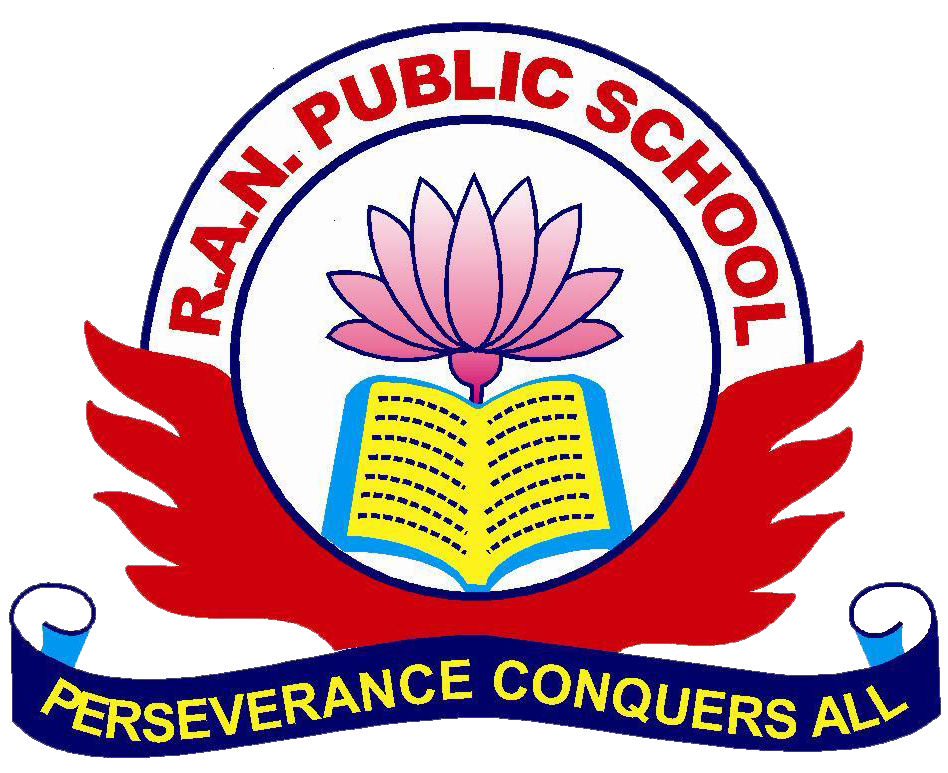
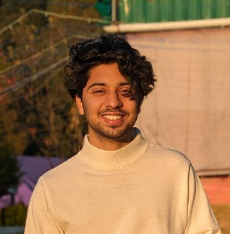

Honeywell Life Sciences
Software engineering · 2025
Analyst. Developer. Curious by default.
Business analytics meets software engineering.
From the question to a working product.
Industry, education & research
Software engineering · 2025

Data & process automation · 2023
Business analytics · Operational research · Risk

Computer science & engineering · 9.1 / 10
Low-hallucination AI · Business risk reporting
Different settings.
The same curiosity.
Marketing intelligence, connected.
A marketing-intelligence SaaS bringing Shopify and Meta Ads into one view of profit, campaign performance, forecasts and supplier decisions. Built with FastAPI, PostgreSQL and an AI analyst with structured outputs and fallback logic.
A calmer way to run a school.
A Flutter and Firebase learning platform connecting role-based access, assessments, fees, report cards and analytics. One product for the people on every side of a school.
Better decisions for A&E operations.
Hospital analytics combining cost, fairness and skill-aware scheduling with statistical sampling, audit trails and XGBoost breach prediction.
The trade-offs behind a cleaner fuel mix.
A power-plant decision model evaluating fuel mix, carbon pricing, SO₂ limits, biomass and emissions-control investment across operational and financial scenarios.
I like understanding how things work.
Then making them work better.
My background sits between computer science and business analytics. I’m interested in the whole problem: the quality of the data, the trade-offs in a decision, and the software people use to act on it.
I’ve worked on engineering and automation at Honeywell Life Sciences and Tata Motors, and built products of my own. Across all of it, the aim is the same: make complex systems more useful and easier to trust.
Away from a screen: football, Borussia Dortmund, and music.
Software Engineer Intern
Developed an AI-assisted compliance-scanning workflow for pharmaceutical quality reviews, using NLP, LLM suggestions and time-series analysis through FastAPI.
Automated 20+ UI/API regression tests, saving approximately 10 hours per QA cycle and increasing test coverage by around 10%.
Jan — Jul 2025Bengaluru, India
Software Engineer Intern
Replaced an outsourced vehicle-testbed conversion workflow with an in-house ETL tool, standardising raw data into Q-DAS-compatible DFQ records.
Processed approximately 2,300 files weekly, reducing batch turnaround from three hours to about two minutes and avoiding around ₹7.8 lakh in monthly vendor costs.
Aug — Oct 2023Pantnagar, India
MSc industry research collaboration
Building a Low-Hallucination LLM Decision Support System for Business Risk Reporting.
Exploring cybersecurity risk and incident reporting, with an emphasis on traceable evidence, structured outputs and dependable narratives for business decisions.
About the research partnerA large-data project using Coursera course reviews: cleaning, tokenisation and standardisation, followed by sentiment-to-rating models evaluated with accuracy, RMSE and weighted F1.
Read the publication2025 — 2026
MSc Business Analytics:
Operational Research and Risk Analysis
Alliance Manchester Business School
Linear programming · Optimisation · Applied statistics · Forecasting · Business intelligence
2021 — 2025
B.Tech Computer Science & Engineering
CGPA 9.1 / 10
Software engineering · Data systems · Machine learning · Applied mathematics

R.A.N. Public School CBSE Class XII · 97.8% · 2021Additional learningAWS Cloud Foundations · AWS Cloud Architecting
Internet of Things · Applied statistics

Get in touchContact